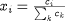
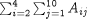
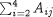

The Distribution concept can be considered as a generalisation of an Array, so the Integral operator can also be used for the integration of a given expression over discrete domains that define Array sizes. Thus, Integral can itself be viewed as a generalisation of the Sigma intrinsic function for carrying out discrete domain summations. For instance, the molar fractions of the reactants at the tubular reactor entrance are defined as:

This equation can be represented in terms of either the SIGMA function or the INTEGRAL
function, as shown below:
# Using SIGMA function X(,0) = C(,0) / SIGMA(C(,0)) ; # Using INTEGRAL operator X(,0) = C(,0) / INTEGRAL(i := 1:NoComp ; C(i,0)) ;
However, the Integral operator is more general than the Sigma function; whereas Sigma always results in a scalar by summing
all dimensions of its argument, Integral can have a more narrowly specified summation domain. For instance, consider a
two-dimensional array Variable A(5,10). Then
SIGMA ( A(2:4, ) )
is the scalar , whereas
INTEGRAL (i := 2:4 ; A(i, ) )
is a vector of length 10, the jth element of which is .